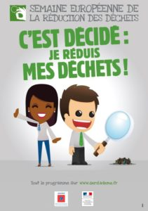

![[Mariage Green] Le Repas](../../blog/images/mariage-green-repas.jpg)
Je profite de la Semaine Européenne de la Réduction des Déchets (qui avait lieu du 18 au 26 novembre 2017) pour vous parler d’un poste propice au gaspillage dans un mariage écolo : le repas

Je profite de la Semaine Européenne de la Réduction des Déchets (qui avait lieu du 18 au 26 novembre 2017) pour vous parler d’un poste propice au gaspillage dans un mariage écolo : le repas ! Heureusement plusieurs alternatives peuvent limiter les déchets et l’empreinte carbone d’un mariage ou d’un tout autre événement.
Menu local, bio et/ou fait-maison
Au quotidien ou exceptionnellement pour cet événement, il est important de miser sur les producteurs locaux. Choisissez des produits de saison, qui ne parcourront pas des centaines de kilomètres pour venir dans votre assiette. Cela sera gage de fraicheur ! En PACA, je vous conseille Localizz / Paume de terre (Aix et alentours), Couleurs Paysannes (Venelles), Ma Ferme (Eguilles), Ma terre et Le Jardin de Léa (Aix). Partout en France, le réseau de La Ruche qui dit Oui, vous met en contact avec les producteurs de votre région.
Les produits biologiques et/ou issus du commerce équitable sont aussi à garder en tête même s’ils coûtent relativement plus cher.
Enfin, le fait-maison est une solution économique pour faire un buffet de mariage écolo ! Attention car cela risque de devenir compliqué au delà de 50 personnes.
Menu végétarien ou végétalien
Pour aller plus loin après le local et/ou bio, vous aurez peut-être envie de privilégier un menu végétarien ou végétalien. En favorisant le bien-être animal pour le plus beau jour de votre vie, vous pourrez vous régaler et faire une bonne action ! Cette démarche de consommation responsable pourra être appuyée par votre traiteur. En attendant, on vous donne quelques pistes en misant sur les champignons, le tofu, le seitan,…
{kind=link}
{kind=link}
{kind=link}
Boissons écolo
La France est LE pays de la viticulture alors pourquoi ne pas en profiter pour faire découvrir à vos invités ce petit domaine biologique ou biodynamique que vous aimez tant ? Partez à la rencontre des producteurs pour leur demander un devis, ils seront ravis !
Pour ce qui est de l’eau, faites le choix d’une eau du robinet servie dans de belles carafes en verre. Si cette dernière n’a pas bon goût, sollicitez l’utilisation de bouteilles en verre recyclable auprès de votre traiteur.
Réduire les déchets
Bien évidemment, on ne jette pas les restes de nourriture mais on propose des doggy bag à vos invités ! Pour cela, optez pour des boites en fibres naturelles 😉
Certains traiteurs s’engagent dans le respect de l’environnement en mettant en place un tri sélectif et en compostant le maximum de déchets organiques. On valide cette initiative à 200% !
Les déchets ne sont pas toujours là où on les attend. Si vous aviez prévu d’imprimer un menu par table (ou un par personne !), gardez en tête que vous pouvez économiser là-desus ! Une grande ardoise ou un tableau à l’entrée de la salle fera parfaitement l’affaire pour annoncer votre menu (local on l’espère !).
Louer la vaisselle
Si votre traiteur ne fournit pas de vaisselle ou si vous vous en occupez vous-même, pensez à la location ! Petites ou grandes entreprises, vous trouverez forcément chaussure à votre pied/assiette à votre table. Chez My Green Event, nous recommandons la Maison Options pour de la vaisselle moderne et pour de la vaisselle vintage, le Bazar de Rêve by Véronique.
Si ce n’est pas une option envisageable, alors choisissez de la vaisselle compostable et biodégradable à défaut d’autre chose.
Une dernière chose ! Pour éviter d’utiliser de l’énergie et de l’eau pour rien, remettez à vos invités des marqueurs de verre sur le thème ou aux couleurs de votre mariage !
{kind=link}
{kind=link}
Choisissez un organisateur de mariage spécialisé « green event »
Voilà la solution la plus simple si vous manquez de temps et de motivation dans ces recherches ! Heureusement, My Green Event est là pour vous accompagner dans la recherche d’un traiteur écolo ou dans l’organisation totale de votre green wedding ! N’hésitez-pas à me contacter !